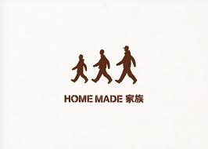

推しのいる生活

Profile
やすはについて
川合泰葉
KAWAI YASUHA
生年月日：1988.9.17
血液型：O
出身地：愛知県
身長：156
My favorite
歴代の推したち
OSHI to WATASHI
推しとわたし
DA PUMP期
沖縄県出身のDA PUMPを好きになる。沖縄に興味を持つ。
高校の進路を考えていたときにたまたまＣＭで沖縄にある高校を知る。『お母さん私ここ行きたい』となり沖縄の高校に進学。
HMKU期
地元愛知県出身のHOME MADE 家族を好きになる。地元愛が増す。彼らをきっかけに地元のインディーズグループいっぱい知る。
毎週のようにクラブにライブを見に行く。そこで仲良くなった友達にBIGBANGを教えてもらう。韓国が私を誘い出す。
BIGBANG期
K-POPアイドルのBIGBANGにはまる。彼らが話す言葉を理解したくなる。
初めての海外旅行で韓国へ。現地に住んだほうが語学力伸びるなと思い、帰ってきた翌日に留学を決意し会社やめます宣言！韓国LIFEをエンジョイ！
INI期
韓国発のオーディション番組から登場したグループ。デビュー前から応援している。
彼らの努力と成長がものすごく、自分もがんばろうと生きる活力を頂く毎日です。←いまここ
参考サイト
- top → モリ・リフォーム
- Profile → INI official HP
- oshi to watashi → Konel
- background → INI official HP